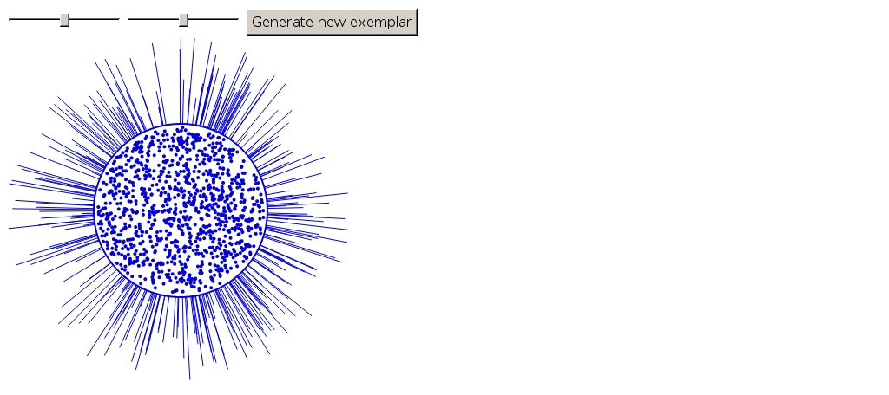

<!DOCTYPE html>
<html>
  <head>
    <title>My experiment</title>
    <script src="../jspsych.js"></script>
    <script src="../plugins/jspsych-html-keyboard-response.js"></script>
    <script src="../plugins/jspsych-image-keyboard-response.js"></script>
    <link rel="stylesheet" href="../css/jspsych.css"></link>
  </head>
  <body></body>
  <script>
  var min_dot_density = 100;
  var max_dot_density = 2000;
  var min_line_density = 30;
  var max_line_density = 550;
  var dim_a = 0.5;
  var dim_b = 0.5;
    /* create timeline */
    var timeline = [];

    /* define welcome message trial */
    var welcome_block = {
      type: "html-keyboard-response",
      stimulus: "Welcome to the experiment. This is the edited version where we try to insert our stimulus into the demo. Press any key to begin."
    };
    timeline.push(welcome_block);

    /* define instructions trial */
    var instructions = {
      type: "html-keyboard-response",
      stimulus: "<p>In this experiment, a circle will appear in the center " +
          "of the screen.</p><p>If the circle is <strong>blue</strong>, " +
          "press the letter F on the keyboard as fast as you can.</p>" +
          "<p>If the circle is <strong>orange</strong>, press the letter J " +
          "as fast as you can.</p>" +
          "<div style='float: left;'></img>" +
          "<p class='small'><strong>Press the F key</strong></p></div>" +
          "<div class='float: right;'></img>" +
          "<p class='small'><strong>Press the J key</strong></p></div>" +
          "<p>Press any key to begin.</p>",
      post_trial_gap: 2000
    };
    timeline.push(instructions);

    /* test trials */

    var test_stimuli = [
      { stimulus: generate_stim(0.5, 0.5), data: { test_part: 'test', correct_response: 'f' } },
      { stimulus: generate_stim(0.2, 0.8), data: { test_part: 'test', correct_response: 'j' } }
    ];

    var fixation = {
      type: 'html-keyboard-response',
      stimulus: '<div style="font-size:60px;">+</div>',
      choices: jsPsych.NO_KEYS,
      trial_duration: function(){
        return jsPsych.randomization.sampleWithoutReplacement([250, 500, 750, 1000, 1250, 1500, 1750, 2000], 1)[0];
      },
      data: {test_part: 'fixation'}
    }

    var test = {
      type: "html-keyboard-response",
      stimulus: jsPsych.timelineVariable('stimulus'),
      choices: ['f', 'j'],
      data: jsPsych.timelineVariable('data'),
      on_finish: function(data){
        data.correct = data.key_press == jsPsych.pluginAPI.convertKeyCharacterToKeyCode(data.correct_response);
      },
    }

    var test_procedure = {
      timeline: [fixation, test],
      timeline_variables: test_stimuli,
      repetitions: 5,
      randomize_order: true
    }
    timeline.push(test_procedure);

    /* define debrief */

    var debrief_block = {
      type: "html-keyboard-response",
      stimulus: function() {

        var trials = jsPsych.data.get().filter({test_part: 'test'});
        var correct_trials = trials.filter({correct: true});
        var accuracy = Math.round(correct_trials.count() / trials.count() * 100);
        var rt = Math.round(correct_trials.select('rt').mean());

        return "<p>You responded correctly on "+accuracy+"% of the trials.</p>"+
        "<p>Your average response time was "+rt+"ms.</p>"+
        "<p>Press any key to complete the experiment. Thank you!</p>";

      }
    };
    timeline.push(debrief_block);

    /* start the experiment */
    jsPsych.init({
      timeline: timeline,
      on_finish: function() {
        jsPsych.data.displayData();
      }
    });

    function generate_stim(dot_dim, line_dim){
      // params
      var w = 400;
      var r = 100;
      var x = w / 2;
      var y = w / 2;
      var circle_r = 2;
      var minLineLength = 10;
      var dot_density = min_dot_density + (max_dot_density-min_dot_density)*dot_dim;
      var line_density = min_line_density + (max_line_density-min_line_density)*line_dim;

      // svg string
      var str = '<svg xmlns="http://www.w3.org/2000/svg" width="' + w + '" height="' + w + '">'

      //Code for drawing the lines that come out of the circle.
      //Each line starts in the center of the circle and is drawn outward
      for (var i = 0; i < line_density; i++) {
        var angle = Math.random() * Math.PI / 2;
        var lineLength = r + minLineLength + (r - minLineLength) * Math.random();
        var x2 = Math.cos(angle) * lineLength;
        var y2 = Math.sin(angle) * lineLength;
        if (Math.random() < 0.5) {
          x2 = -x2;
        }
        if (Math.random() < 0.5) {
          y2 = -y2;
        }
        x2 = x + x2;
        y2 = y + y2;
        str += '<line x1="' + x + '" y1="' + y + '" x2="' + x2 + '" y2="' + y2 + '" style="stroke:rgb(65,105,225); stroke-width:1;" />';
      }

      // draw circle
      str += '<circle cx="' + x + '" cy="' + y + '" r="' + r + '" style="stroke:rgb(65,105,225); stroke-width:2; fill: rgb(255,255,255);"/>'

      //Code for creating and dispersing the dots
      for (var j = 0; j < dot_density; j++) {
        do {
          var x2 = Math.random() * 2 * r + x - r;
          var y2 = Math.random() * 2 * r + y - r;
        } while ((Math.pow(x - x2, 2) + Math.pow(y - y2, 2)) > Math.pow(r - circle_r - 2, 2));
        str += '<circle cx="' + x2 + '" cy="' + y2 + '" r="' + circle_r + '" style="fill:rgb(65,105,225);" />';
      }

      str += "</svg>";

      return str;
    }
  </script>
</html>


<!DOCTYPE html>
<html>
  <head>
    <title>My experiment</title>
    <script src="jspsych-6.0/jspsych.js"></script>
    <script src="jspsych-6.0/plugins/jspsych-html-keyboard-response.js"></script>
    <link href="jspsych-6.0/css/jspsych.css" rel="stylesheet" type="text/css"></link>
  </head>
  <body></body>
<script>

/* create timeline */
 var timeline = [];

 /* define welcome message trial */
 var welcome = {
   type: "html-keyboard-response",
   stimulus: "Welcome to the experiment. Press any key to begin."
 };
 timeline.push(welcome);

 /* define instructions trial*/
 var instructions = {
   type: "html-keyboard-response"
   stimulus: "<p>In this experiment, four stars will appear in the center" +
   "of the screen. </p><p> If the <strong>first</strong> star from the left is different" +
   "from the others, press 1. </p><p>If the <strong>second</strong> star from the left is different"+
   "from the rest, press 2. </p><p> If the <strong>third</strong> star from the left is different from the rest"+
   "press 3. </p><p> If the <strong>fourth</strong> star from the left is different from the rest, press 4. </p>" +
   "<div style='float: left;'></img>" +
         "<p class='small'><strong>Press the F key</strong></p></div>" +
         "<div class='float: right;'></img>" +
         "<p class='small'><strong>Press the J key</strong></p></div>" +
         "<p>Press any key to begin.</p>",
     post_trial_gap: 2000
 };

 timeline.push (instructions);

 /* start the experiment */
 jsPsych.init({
   timeline: timeline
 });
</script>
</html>
